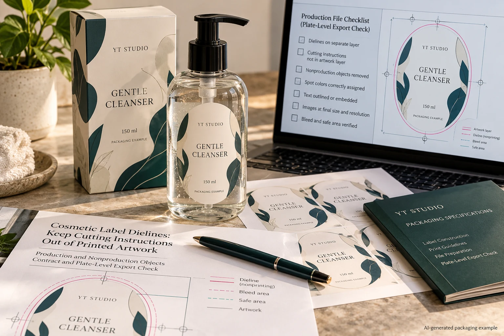
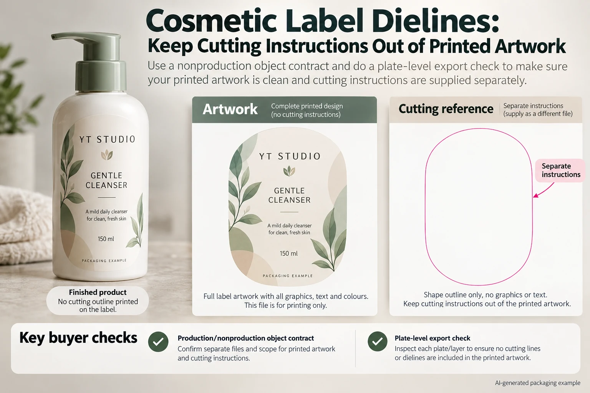

An oval cleanser label arrives with a bright cutting outline. The artwork operator calls it a dieline. The buyer assumes the printer will know not to print it. Unless the production party has acknowledged how that object will be handled, both teams may be approving different outputs.
Define which objects print, which guide cutting and which exist only for review. Then inspect the delivered production export against that agreement. Naming a layer DIELINE is useful organization; it is not, by itself, a production instruction that every workflow interprets the same way.

Separate three kinds of information
The printable design contains the brand, copy and intended graphic effects. The cutting reference defines the intended shape. Review annotations can identify dimensions, panel names or comments. A single presentation file may contain all three, but the production handoff needs to distinguish them.
Ask the converter which file arrangement it accepts. Some workflows may request an identified cutting spot separation; another arrangement may use a separate reference. Obtain the actual instruction rather than deleting every unusual spot color or guessing that a visible outline must be process ink.
Adobe's Illustrator layer guidance explains organizing artwork in layers. That software structure helps an operator manage objects. It does not establish the converter's cutting-channel convention or guarantee what a different output system will do with the delivered file.
Write an object contract before changing the export
Give each functional element a clear role and an owner. Include the intended cutting path, white ink, foil, varnish and any other production treatment present in the actual job. These are not all interchangeable nonprinting guides. Some represent physical layers that must be produced.
Use the spot-ink naming guide when channel names collide. Here the additional decision is whether an object belongs in the printed design, another production operation or only a review reference. A correctly named cutting channel can still be mishandled if that role is never agreed.
Keep the cut path connected to the approved shape revision. If the operator redraws the outline merely to tidy the presentation, compare it with the released geometry before using it. The buyer should not discover a changed corner or panel extent only after receiving the labels.
Use a plate-and-object checklist
| Element | Agreed treatment | Evidence to retain |
|---|---|---|
| Brand and product copy | Intended printable content | Approved visual proof and production export |
| Cutting reference | Converter-confirmed cutting instruction | Named path or channel and drawing revision |
| White or decoration layer | Actual specified production operation | Channel identity and acknowledged separation |
| Dimensions and comments | Reference only unless explicitly required | Identified review file, kept distinct from production content |
| Final output check | Inspect the expected channels and composite | Exact file revision, reviewer and unresolved exceptions |
First compare the elements with the supplier's file instruction. Then have prepress inspect the delivered export using appropriate separation and output-preview tools. Check that the intended printed objects remain, the cutting instruction is identifiable and reference annotations are not part of the printed content.
Do not judge only the composite preview. It may not explain which channel carries a line or how a special separation will be handled. Equally, a channel list alone does not establish that the visible artwork remains correct. The two reviews answer related but different questions.

Do not use overprint as a synonym for do not print
Overprint affects the interaction of output colors. It is not a general instruction to omit an object from all production. Our overprint review addresses that behavior separately. A cutting reference set to overprint still needs an agreed functional treatment in the actual workflow.
Also avoid hiding the guide and assuming the source file is now universally safe. Export settings, layer visibility and the receiving workflow need their own checks. Inspect the actual file that will be acknowledged for production after the change.
This guide does not prescribe a universal cutting-channel name, line thickness or PDF preset. Those details belong to the converter's current specification. If its instruction conflicts with the supplied file, obtain a corrected export or an explicit resolution before release.
A simple order may need a simple handoff
A hypothetical rectangular label can be supplied as agreed artwork with a separate dimensioned reference. If the converter accepts that arrangement, there is no benefit in adding an invented special channel merely to make the file look more technical.
A shaped label with several production layers may need a more structured file. Its buyer has a reason to request an acknowledged channel map and a proof showing the finished appearance. Removing all spot colors to simplify the export could remove a required white or decorative operation.
The practical choice follows the job and receiving workflow. Stop if nobody can say whether a visible outline prints, if two different cutting revisions exist, or if reference copy remains mixed into the production content. Assign the correction to the artwork operator and have the converter acknowledge the revised export.
Request confirmation against the file you actually send
For custom cosmetic labels, provide the container, intended shape and dimensions, artwork revision, production-layer requirements and quantity by design. Include the converter's current file instruction where available and list the role of any guide objects.
Prepare one request with the inquiry form. Send artwork and references by email or WhatsApp; the form does not upload files. Ask the receiving production party to confirm the treatment of the cutting instruction before the artwork release becomes a print order.